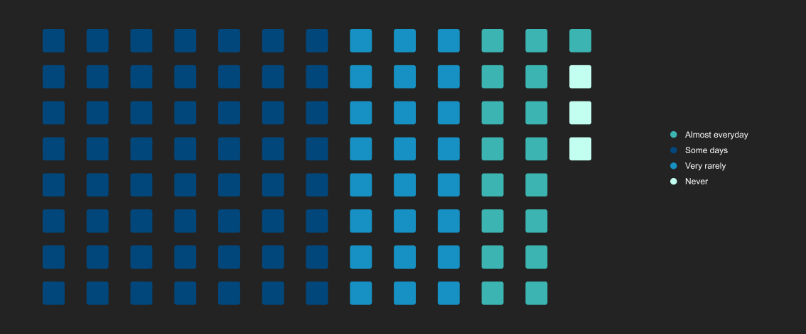
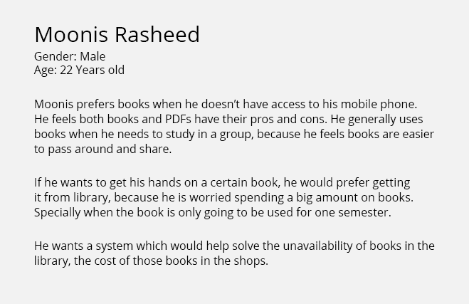
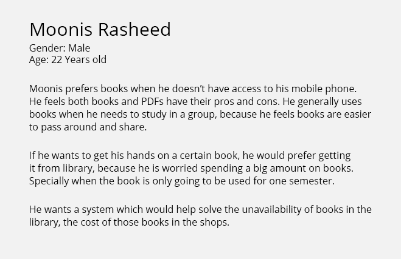
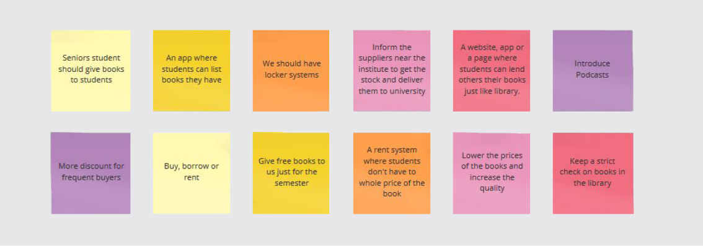
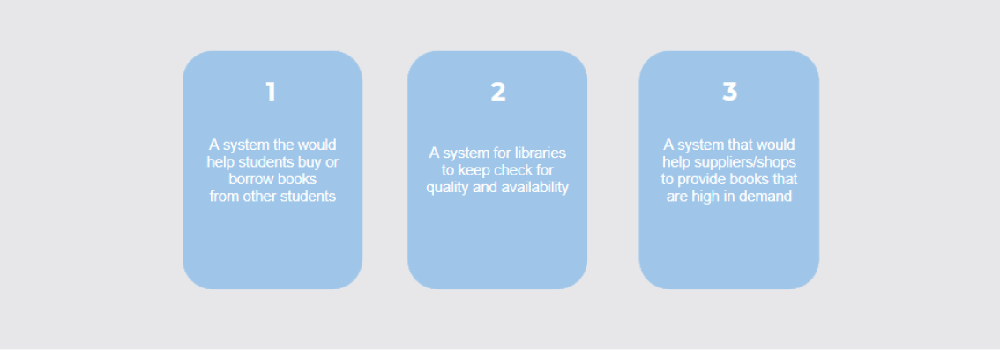
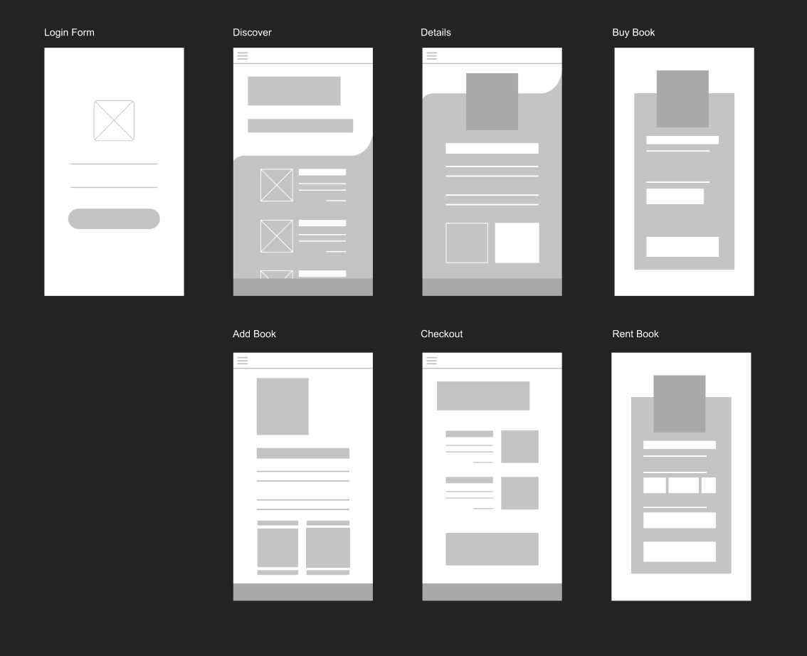

Introduction
Course books play a crucial role in universities where students use these books to gain in-depth knowledge of a subject and prepare for their exams. There are many formats in which these books are available such as soft copies like PDFs, ebooks available online, and hard copies available in stores and libraries at different costs.
Acquiring these books presents itself with a few problems which discourage students. To empathize and understand these problems and come up with a solution for them, I conducted interview sessions and decided to come up with a solution following a three-phase design thinking framework.
Phase 1 - Research
To start, I approached university students for qualitative interviews and surveys. The first thing was to inquire about the need for hard copies since students have other options like eBooks and PDFs.
A survey showed that out of 30 respondents, 27 of them have referred to the printed course books once or more during their studies. Furthermore, I also found out that majority of the people using the books were freshmen and sophomore students, and most of these books were used for only a small duration and specific courses.
"I would choose books because it is much easier to focus. I use books for math-related subjects such as Linear Algebra. It is much easier to read equations in printed format than on a screen."
Survey Results: Usage of course books.
Key Takeaways (Design Opportunities)
Two major challenges were identified when the students were interviewed about acquiring books from stores and libraries.
Challenge 1: The Unavailability of books
During interviews, we found out that most students were struggling to obtain course material when needed. The other option for the students was to issue the book from the library but they faced the same issue there as well.
"Most of the books are not available in the stores nearby, and you have to go far to buy them."
Challenge 2: The Feeling of being wasteful with money
Upon further inquiry, most of the students in the third and fourth year of their bachelor's program told us that the books they bought in the first year were still with them and that those books were of no use to them and they felt that they wasted their money.
"Many of the course books are expensive. Also, why should we buy books when they are only going to be used for one semester and then kept away."
Outcome of Research
Our interviews with students gave us lots of insights which were organized using an affinity diagram below.
Phase 2 - Converting insights into actions
Creating User Personas
Qualitative User personas were created based on the students we interviewed. These personas represent a group of qualities that proved to be the foundation for our ideation and design phase.
❮
 

❯
Brainstorming and Ideation
Afterward, I held brainstorming sessions and general interviews with the students to gain their insights on what they thought an optimal solution could be. These ideas were then grouped and an optimal solution was selected that would cater to most if not all the problems we have identified.
 Phase 3 - Execution
The Architecture
I designed a high-level user flow architecture, covering the basic functionalities of the application.
The Wireframes
Low-fed and Hi-fed wireframes and screen designs of the above-mentioned functions were created in Figma
Solution Overview